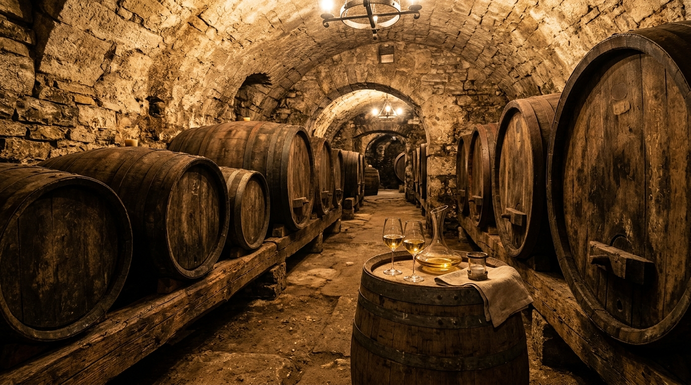

Hišna bela zvrst
Mešanica vseh treh sort iz naših dveh vinogradov: Malvazije, Rebule in Vitovske grganje, ki jo točimo neposredno v naši vinski kleti.

Odkrijte družinsko vinsko klet Skomina, poskusite domače vino in suhomesnine ter uživajte v sveže pečenih napolitanskih picah.

V naši družinski vinski kleti v Oševljeku obdelujemo dva vinograda na obrobju Spodnje Vipavske doline. Malvazijo, Rebulo in Vitovsko grganjo potrgamo ročno in jih v kleti združimo v eno belo zvrst.
Poleg vinarstva pripravljamo domače mesnine. Do pred nekaj leti smo prašiče redili sami, danes pa jih kupimo, zakoljemo in mesnine pripravimo na Dolenjskem. Pršut, šalam in panceto nato sušimo in zorimo v domači kleti v Oševljeku, pripravimo pa tudi sladke klobase in krodegine za kuhanje. Ob degustacijah v kleti v vrtljivi električni peči pečemo napolitanske pice.
Obiščite našo vinsko kletSpodnji vinograd leži na odprti sončni legi pod vasjo Oševljek, kjer piha vipavska burja. Zgornji vinograd je skrit na mirni gozdni jasi višje proti kraškemu robu, kjer se flišna tla prepletajo z apnencem.
Vinska klet (Oševljek 14), spodnji in zgornji vinograd
Odprto vino v litrih in domače suhomesnine lahko naročite za domov, napolitanske pice pa spečemo ob vašem obisku v vinski kleti.
Mešanica vseh treh sort iz naših dveh vinogradov: Malvazije, Rebule in Vitovske grganje, ki jo točimo neposredno v naši vinski kleti.
Pršut, šalam, panceta ter sladke klobase in krodegine. Prašiče kupimo in mesnine pripravimo na Dolenjskem, suhe mesnine pa zorimo v naši kleti v Oševljeku.
Ob predhodno najavljenih obiskih vinske kleti v naši vrtljivi električni peči pečemo sveže napolitanske pice, obložene tudi z našimi mesninami.
V vinski kleti v Oševljeku 14 sprejemamo najavljene skupine in pare v slovenščini, angleščini ali italijanščini. Vino na liter in suhomesnine lahko prevzamete osebno v kleti.
Pokušnja naše bele zvrsti (Malvazija, Rebula, Vitovska grganja) v vinski kleti z narezkom pršuta, šalama, pancete in sladkih klobas, pozimi po dogovoru tudi s kuhanimi krodeginami.
Sprehod do vinogradov v Oševljeku, pokušnja vina in suhomesnin v kleti ter peka svežih napolitanskih pic v naši vrtljivi električni peči.
Izberite vrsto obiska kleti ali napišite, koliko litrov vina oziroma suhomesnin želite naročiti.